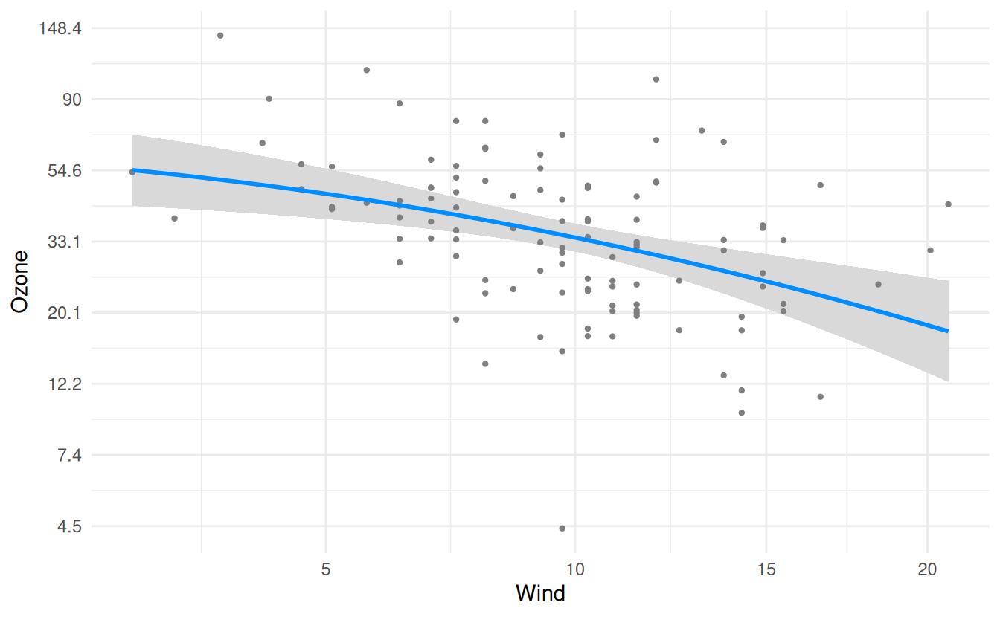
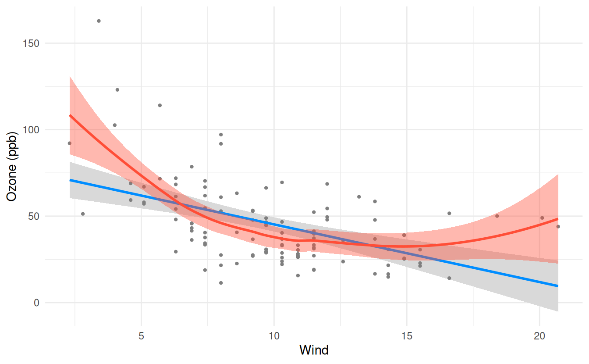

fit <- lm(Ozone ~ Solar.R + Wind + Temp, data = airquality)As of version 3.0 visreg() always returns a ggplot object, so anything you already know about customizing ggplot2 plots works here too via +, exactly as it would for any other ggplot2 plot. The Graphical options article covers the arguments visreg() itself exposes for controlling the appearance of the line, band, and points; this article covers everything else you can do to the plot once it’s built.
First, let’s fit the following model:
Titles and axis labels
These are controlled through labs():
Note that if you are using the labelled package to set a label for a variable name, visreg will automatically use that label as the axis title in place of the raw variable name, just like ggplot() does:
Transforming axes
Axes can be transformed using any of ggplot2’s scale_x_*() and scale_y_*() functions. For example, to fit the model on the log scale, but plot it on the original scale (and also make the horizontal axis on the square root scale for some reason):
logfit <- lm(log(Ozone) ~ Solar.R + Wind + Temp, data = airquality)
at <- seq(1.5, 5, 0.5)
visreg(logfit, "Wind") +
scale_y_continuous(breaks = at, labels = round(exp(at), 1)) +
scale_x_sqrt() +
labs(y = "Ozone")
Annotations
annotate() adds a single element to the plot without needing an accompanying data frame:
Adding a smooth
Layering a loess smooth on top of the fitted line is a useful diagnostic: if it deviates noticeably from the (straight) fitted line, that’s a sign the relationship may not be adequately captured by a linear term for Wind.
visreg(fit, "Wind") +
geom_smooth(method = "loess", col = "#FF4E37", fill = "#FF4E37")`geom_smooth()` using formula = 'y ~ x'
Combining plots
The patchwork package can combine multiple plots into a single figure with +: